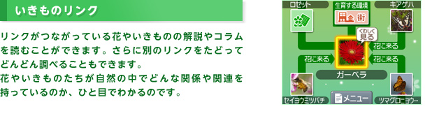
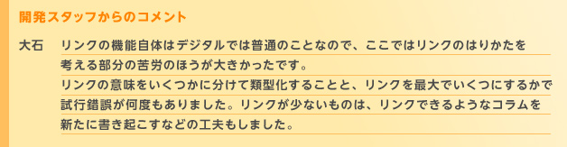
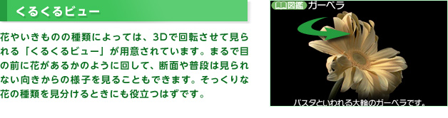
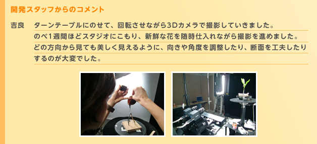

最初に試してみたいのが、「バラエティ検索」の中にある「花カメラ」です。
ニンテンドー3DSのカメラで花を正面から撮影して、3つの質問に答えると、たくさんある花の中から近いものが自動的にしぼりこまれるのです。
『花といきもの立体図鑑』の大きな特徴のひとつとして、ニンテンドー3DSの機能を活かした、「バラエティ検索」の機能が挙げられます。目の前の花やいきものの名前がわからなくても、すぐに調べることができるのです。
そこで、N.O.Mライターが外で見かけた花やいきものを、実際に「バラエティ検索」で調べてみました。
また、開発スタッフである、株式会社パオン 金子 篤さん、株式会社平凡社 大石 範子さん、任天堂 吉良 悟史に、もっと楽しく使うコツや、開発時の工夫やエピソードなど、コメントも寄せてもらいました。

お出かけ先の公園や植物園で、あるいはいつもの道端で、きれいな花を見つけたけど、何の花なのかわからない……といった経験のある方は多いはず。
『花といきもの立体図鑑』の「バラエティ検索」機能は、そんなときにすごい威力を発揮してくれます。
最初に試してみたいのが、「バラエティ検索」の中にある「花カメラ」です。
ニンテンドー3DSのカメラで花を正面から撮影して、3つの質問に答えると、たくさんある花の中から近いものが自動的にしぼりこまれるのです。
「花カメラ」結果画面で「くわしく見る」をタッチすると、その花の3D写真を確認したり、解説を読むことができます。
種類による外見的な特徴や学名などのデータはもちろん、花にまつわる歴史や名前の由来、花言葉までわかります。
しっかり解説を読んでから目の前にある花をもう一度ながめると、まるで別の花を見ているように感じられて、不思議な気分になります。



